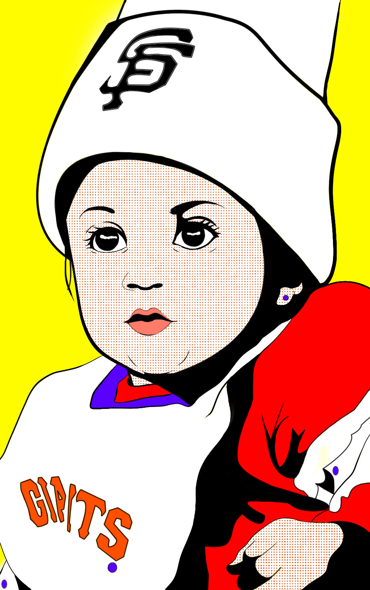

Ugly Produce City
Date:2020
Dimension:455x750px
Mediums: Adobe Illustrator
Description: The piece was made in Adobe Illustrator, using an old photo as reference. The style was inspired by Roy Lichtenstein’s Pop Art.

Date:2020
Dimension:455x750px
Mediums: Adobe Illustrator
Description: The piece was made in Adobe Illustrator, using an old photo as reference. The style was inspired by Roy Lichtenstein’s Pop Art.